Наша компания осуществляет деятельность уже более 10 лет и заняла за это время прочные
позиции на рынке строительного сегмента и сферы услуг в области лифтового хозяйства,
зарекомендовав себя как надёжный партнёр.
С самого начала ведения деятельности нами большое внимание уделялось
формированию трудового коллектива, благодаря чему, на сегодняшний день,
костяк предприятия составляют работники высокой квалификации, имеющие
богатый опыт работы в лифтовой отрасли, способные произвести
качественно и в сжатые сроки монтаж, замену, диспетчеризацию и пуско-
наладку лифтов и эскалаторов любой сложности, различных заводов-
изготовителей. Наш коллектив предложит Вам высокий уровень организации
работ, надежность и отличное качество. Мы рассчитываем на долгосрочное
взаимовыгодное сотрудничество и готовы предложить Вам гибкую систему
скидок и взаимных расчётов.
У нас вы можете заказать лифтовое оборудование в торговый центр,
высокоскоростные лифты для высотных зданий, лифты для объектов
частной недвижимости, панорамные лифты для бизнес-центров, специальное
подъемное оборудование для установки в лечебных учреждениях, эскалаторы и
траволаторы, автомобильные лифты для подземных паркингов,
автоматизированные парковочные системы, а так же грузовые подъемники и
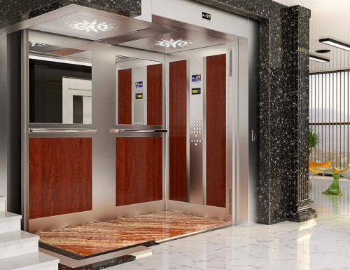
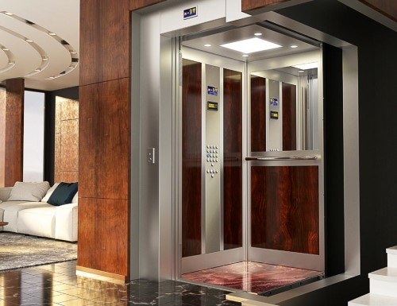
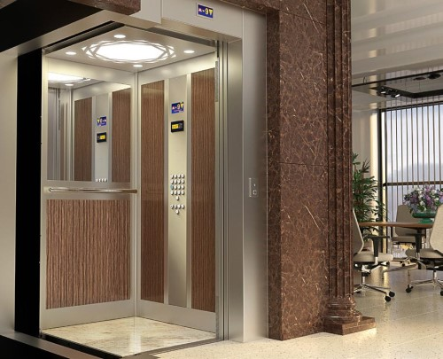
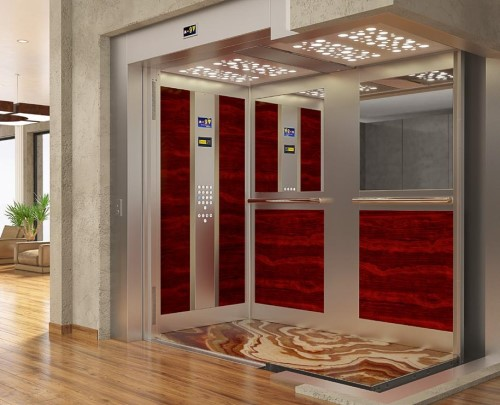
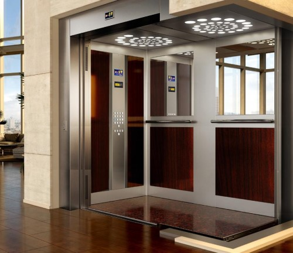
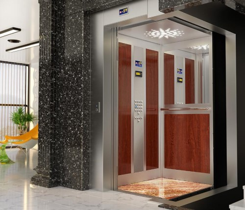
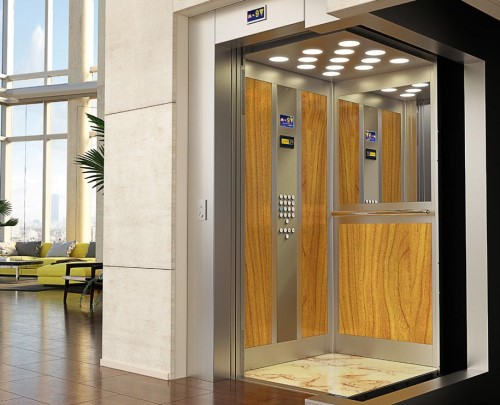
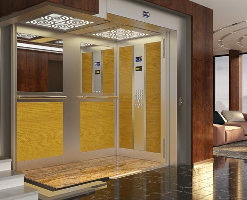
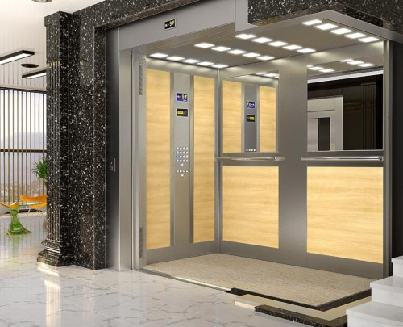
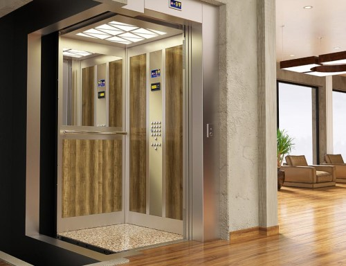
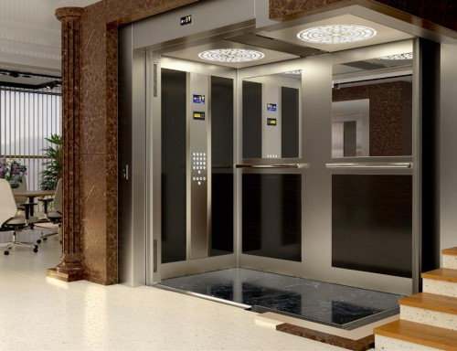
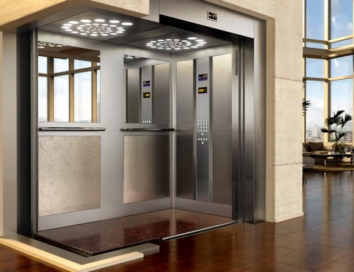
подъёмники для инвалидов. Мы предлагаем разные типы и виды лифтов,
отделки лифтовых кабин, лифты без машинного помещения, эконом варианты
и лифты премиум-класса.
У наших специалистов Вы сможете получить подробную информацию о
предлагаемых подъемных механизмах, их производителях, описание,
фотографии, технические характеристики.
Лифтовое оборудование, смонтированное нашей организацией на протяжении
многих лет успешно служит в домах, производственных зданиях, больничных,
образовательных учреждениях, торговых и деловых центрах на территории
г.Ростова-на-Дону и Ростовской области. Накопленный опыт позволяет в
кратчайшие сроки производить поставку, монтаж, капитальный ремонт,
модернизацию, замену пассажирских, грузовых, больничных, коттеджных,
электрических и гидравлических лифтов, эскалаторов и промышленных
подъёмников как отечественного так и зарубежного производства,
оборудование диспетчерской связи лифтов, а так же осуществлять их
техническое и сервисное обслуживание.
Следует особо отметить, что наши специалисты готовы предложить
наиболее удобные технические решения. Мы оказываем поддержку нашим
клиентам на каждом этапе от проектирования, поставки, монтажа до
технического обслуживания. Принимая во внимание требования наших
заказчиков перечень поставляемого оборудования и материалов постоянно
расширяется.
Мы берём на себя гарантии по срокам и качеству выполняемых работ,
поставок лифтового оборудования и комплектующих, предоставляя лучшее
соотношение цены и качества, выполняя сложные и не стандартные задачи!